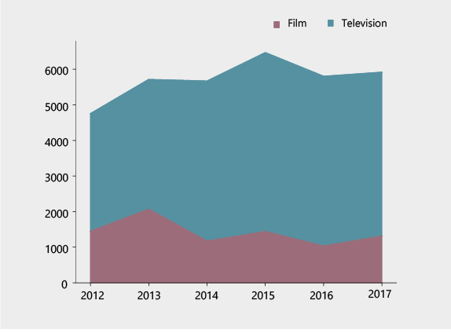

Film shootings in NYC
110 years of filming in 6 years of everyday life
BY Kelly Kiki
Published August 10, 2018
How often do you see a film shooting, when you walk around NYC? Well, Mayor’s Office of Media and Entertainment (MOME) provided almost 48K film permits, from 2012 to 2017; each filming event had lasted for about 20 hours on average. In other words, filming duration sums to about… 110 years within 6 calendar years. Keep reading if you would like to know where all these shootings happened and what type of events they are about.
"No parking" warnings in Harlem (left) and in Midtown Manhattan (right), while film shootings are in progress.
Walk around Manhattan in October and you might be on the screen
More than 8K film permits are given on average per year, according to data provided from 2012 onwards. In 2015, MOME provided 8,958 film permits, which means that shootings increased by 30% in comparison to 2012, when 6,910 shootings took place.October seems to be the most film-friendly month each year, which means that NYC streets are “occupied” by busy film makers, especially in Midtown Manhattan and Williamsburg in Brooklyn, which are the most popular backdrops for film shootings. Regarding shootings for movies in particular, Broadway Av, 5th Av, Ingraham Str in Brooklyn and the Riverside Drive are the most beloved locations. However, Amsterdam Av dominates regarding most long-lasting shootings of any type and total filming duration in the street is 89 days in 6 years.
Mapping film permits in NYC (2012-2017)
Midtown Manhattan and Williamsburg in Brooklyn are the most popular areas for a shooting

SOURCE: NYC Open Data, provided by MOME
Number of shootings for movie purposes by top street
Broadway Av and 5th Av seem to be the most common sceneries for cinematography shots

Top-10 streets in long-lasting shootings
Shootings of any type totaled more than 89 days in Amsterdam Av, from 2012 to 2017


SOURCE: NYC Open Data, provided by MOME
Film permits by month over the years
Film shootings have been increasing in October; producers are less active in May and June.

SOURCE: NYC Open Data, provided by MOME
Lights are on for a film shooting along West 125 Street in Harlem.
Cinema vs Television
Film makers love using NYC streets as the backdrop for their films. If we also take into account the dominance of US film industry, we all know why New York is so familiar to everyone even before they firstly visit the city – everyone can recall iconic New York scenes in movie history. In recent years, it seems that if Broadway Av, 5th Av and the Riverside Drive are the most Manhattan’s popular film locations, Ingraham Str is the beloved Brooklyn scenery by far; film makers who love Queens share their scots between 35 Str and Laurel Hill Blvd. However, it is a fact that television is dominant out there: 54% of film permits provided, from 2012 to 2017, had been for television productions: 76% of them had been for episodic series and only 4% had been the news share.
Top filming locations in Manhattan for movies
Most film shootings have been hosted in Broadway Av
Most beloved streets in Brooklyn for movie makers
Ingraham Str comes first, counting 72 shootings in 6 years

Top-streets in Queens as the backdrop for films
Shootings are almost equally shared between 35 Str and Laurel Hill Blvd
Film permits shares by category
54% of film shootings happened in NYC streets between 2012 and 2017 was for television productions
SOURCE: NYC Open Data, provided by MOME
Television shootings in detail
As expected, most television shootings are for episodic series (76%, incuding cable); news broadcasting share is 4%
SOURCE: NYC Open Data, provided by MOME
Film shootings by borough
Manhattan's streets are most preferred backdrop; television is dominant in every borough
SOURCE: NYC Open Data, provided by MOME
Movies vs Television by year
In 2016, percentage difference between movies and television shootings hits 360.7%; the smallest percentage difference is recorded in 2013, when difference is limited to 76.2%
SOURCE: NYC Open Data, provided by MOME
Streets which have been mostly on the news by year
Has everything been happening at Times Square or television reporters limit their backdrop preferences?
SOURCE: NYC Open Data, provided by MOME